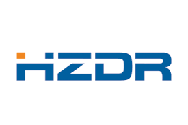

Atomic structure of nanosystems from first-principles simulations and microscopy experiments (AS-SIMEX 2026)
part of the series of Physics Boat Workshops (PBW)
June 1 - June 3, 2026
Helsinki, Finland - Stockholm, Sweden
The Physics Boat sets sail once again. Science on the seas! Get to see Stockholm so you know your way around when you are invited to attend the ceremony at the Stockholm Concert Hall :-)
Workshop
Topics
- Application of first principles and machine learning methods to atomistic modeling of defective materials:
- TEM image simulations based on DFT data
- Simulations of EELS and ELNES spectra
- Advanced computational techniques for simulating STM and AFM images
- Simulations of vibrational spectroscopies
- Experimental methods for probing the defect properties:
- Progress in aberration-corrected high resolution transmission electron microscopy (AC-HRTEM) studies of defects and low-dimensional materials
- Production of defects under electron beam and electron-beam-mediated engineering of nanostructures
- STM/AFM manipulation of nanostructures
- Surface chemistry at the nanoscale - particularly where defects and impurities clearly dominate reactive properties
- Helium ion microscopy
Introduction
Recent progress in the transmission electron microscopy (TEM) as well as in scanning tunneling and atomic force microscopy (STM/AFM) made it possible to not only unravel the atomic structure of various systems with a resolution of better than 0.1 nm, but also carry out elemental analysis and determine the types of particular atoms in the sample. Moreover, based on spectroscopic in-situ techniques (for example, electron energy loss spectroscopy, EELS), the charge state and the bonding configuration of individual atoms and point defects in the material can be identified.
The unequivocal interpretation of the experimental results can considerably benefit from the juxtaposition of the images to the results of first-principles calculations. With regard to TEM, the accuracy of the measurement is now so high that in addition to the information on the atomic configuration (that is atom positions), the detailed information on the spatial distribution of the electron density and on the electron structure of the system is required. Likewise, the microscopy knowledge on the local electronic structure of the system is extremely important for the correct interpretation of the experimental STM and AFM images and spectra.
First principles simulations, and specifically density-functional theory (DFT) approaches, have provided lots of insight into the electronic structure and properties of various solids. They also considerably extended our understanding of how the STM/AFM or TEM images are formed. Besides, using DFT and time-dependent DFT molecular dynamics, one can simulate the manipulation of the nanostructures by SPM tools and the changes made to the system, e.g., production of defects under electron irradiation and their time evolution.
In this workshop we are going to bring together the TEM/STM/AFM experts and computational materials scientists to discuss the progress in TEM/ STM/AFM analysis and visualization of the atomic structure of nanosystems. The workshop will be focused on various nanostructures, and will include a wide variety of substrates from graphene and transition metal dichalcogenides to complex oxides.
Other
Physics Boat 2026 is the 9th time we take science on a cruise. The previous event was held in 2024. The workshop consists of invited and contributed talks as well as posters. Invited and contributed speakers will cover the recent progress in simulations and the relevant experimental areas.
Important dates
- 02.04.2026 Registration/abstract submission deadline
- 09.04.2026 Acceptance notification
- 24.04.2026 Accommodation fee payment deadline
- 01.06.2026 Workshop starts
Venue
Boat
The workshop will take place on a board of a ferry going from Helsinki to Stockholm via Aland and back.
The workshop will start at 11:00 am on Monday the 1st of June, and we will work till 7.30 pm (with ca 2 hour break to see the departure, Helsinki archipelago and the Suomenlinna fortress). Next morning (the ferry arrives in Stockholm at 10:00 am) can be used for discussions, which can take place in Stockholm downtown (a short metro ride from the harbour where the ferry docks).
The presentations will continue again on Tuesday at about 2 pm, and they will last until 7:30 pm. After returning to Helsinki on the 3rd of June, we remain on board of the ferry till 2 pm, and the presentations will continue from 9 am on till 1 pm ending with a lunch.
If you cannot arrive in Helsinki early enough on the 1st of June, we recommend that the you come on the 31st of May and spend the night in Helsinki (on your own costs).
Travel
Train from the airport
There is a direct train connection from the airport to the central railway station in downtown Helsinki. You have the option of taking either the I train (west loop, 47 min.) or the P train (east loop, 43 min.), both of which arrive at Helsinki Central Station (Rautatieasema). Tickets cost 4.10 euros and should be bought from the machines on the platforms before boarding the train.
Bus from the airport
You can also take the local bus 600, which costs the same but takes slightly longer to arrive at the central station. From downtown, you need to come to the ship terminal (Olympiaterminaali), which can be reached with tram 2 (included in train/bus ticket if tram is entered within 90 minutes from buying the ticket). The tram trip will take about 13 minutes. Walking the same distance will take about 20 minutes.
Website to plan your trip using public transport
The easiest way to plan the trip from and to the airport is to use the journey planner (available in English). The journey planner will also provide you with maps of the journey.
Taxi
Another option is to take taxi from the airport. The price will be about 50 euros, and the trip will take ~30 minutes depending on the traffic.
Registration
Abstract submission
Registration will open soon.
Costs
The workshop and accommodation fees are specified below (except for the invited speakers).
- 350 EURO for a single (own) cabin
- 250 EURO for a double (shared) cabin
- 450 EURO for a single (own) cabin + accompanying person
This covers accommodation in a sea-view cabin, two buffet-style dinners, two lunches and two breakfasts. The details of payment will be given later.
Funding
Invited speakers
Partial list of invited speakers:
- Ivan Brihuega, Universidad Autónoma de Madrid, ES
- Jeison Fischer, University of Cologne, DE
- Julian Klein, Massachusetts Institute of Technology, US
- Jose Lado, Aalto University, FI
- Vincent Meunier, Penn State University, US
- Hannah Stern, University of Oxford, UK (to be confirmed)
- Toma Susi, University of Vienna, AT
- ... more to come
Several additional invited speakers will be selected based on the submitted abstracts.
A limited number of slots will be available for contributed talks and more for poster presentations.
We limit the workshop to 60 people.
Programme
Shortly before the start of the workshop the entire program will be shown here, including direct links to the abstracts. See above for a general outline.
Practical Information
Some practical details related to the boat workshop are given below.
- We meet on Monday 1st June at 11:00 a.m. in the Olympia terminal, Olympiaranta 1, located in downtown Helsinki. Put simply this address in google map for directions. It takes about 20 min to walk from the central railway station to the terminal. You can also take tram 2 from the central railway station. The tram stop is just in front of the station. If the railway station is behind you, you should take the tram going to the left.
- The organizers will be in the terminal main lobby (near the group check-in counter). Normally there are relatively few people at that time in the lobby, so it should not be a problem to spot us. We will give you your tickets/key cards, along with your badge and abstract book.
- You need a passport or EU identity card to enter the ship.
- If you come after 11:30, we leave your key card at the group check-in. You can get it by giving in your name.
- Most likely, the cabins will not be ready when we arrive, so that we will go directly to the conference facilities (the very front of the ship, the entrance is one floor down from the Promenade). There is enough room for luggage there.
- The presentations start at 11:40, while the boat departures at 17:00. This means that the accompanying persons can come later than 11:00 (or have lunch, then leave) and explore Helsinki for a couple of hours more, then come back. Everyone should be back to the boat at least 30 mins before departure.
- Presentations should be prepared in Powerpoint, OpenOffice, Keynote or PDF. We will have a "general" presentation computer, but surely you can use your own laptop. If you use the presentation computer, all presentations and movie files must be downloaded to the presentation computer before the session starts.
- The posters will be in the same room. Blue tack and scotch tape will be provided.
- There is a free WLAN from Silja in the conference facilities, although after the boat leaves the harbour, it may be quite slow. Of course also 4G/3G Internet will work, there is mobile network during almost all of the trip (except for the crossing from Aland to Sweden).
- We arrive in Stockholm at 10:00. on Tuesday, and the presentations start at 14:20. You can stay onboard or visit Stockholm during the first part of the day. The boat departures at 16:45.
- Note that Swedish time is DIFFERENT from Finnish by 1 hour (9 a.m. in Finland is 8 a.m. in Stockholm). We stick to Finnish time on Mon and Wed, and to Swedish time on Tue. This means that you will have an extra hour to sleep the night of Mon/Tue, and one hour less the night of Tue/Wed, so please plan your evening/morning program accordingly.
- We arrive in Helsinki at 10:30 a.m. and stay onboard until 2:00 p.m.
- It takes about 1 hour to get to the airport from the ferry terminal.
Organizers
| Dr. Arkady Krasheninnikov | |||
| Prof. Hannu-Pekka Komsa | |||
| Dr. Harriet Åhlgren |
|
Microelectronics Research Unit University of Oulu P.O.Box 8000 FI-90014 Oulu, Finland |
Department of Physics University of Helsinki P.O.Box 43 FI-00014 Helsinki, Finland |
 |
Institute of Ion Beam Physics and Materials Research Helmholtz-Zentrum Dresden-Rossendorf Bautzner Landstraße 400 01328 Dresden, Germany |